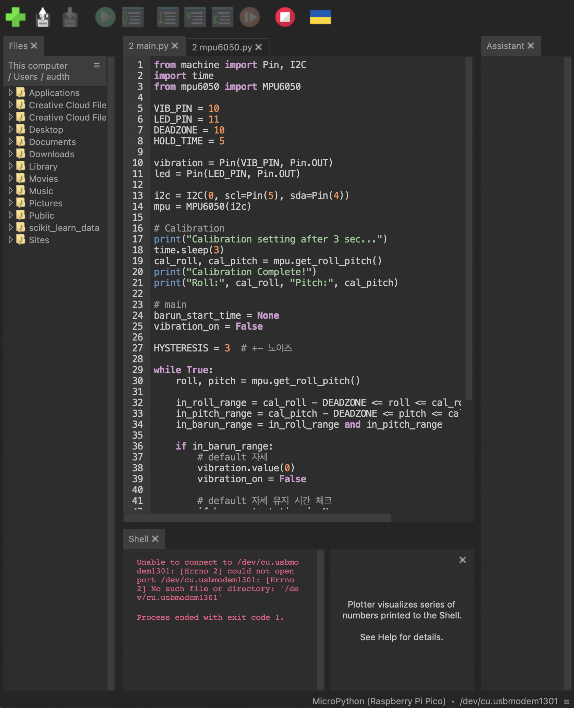
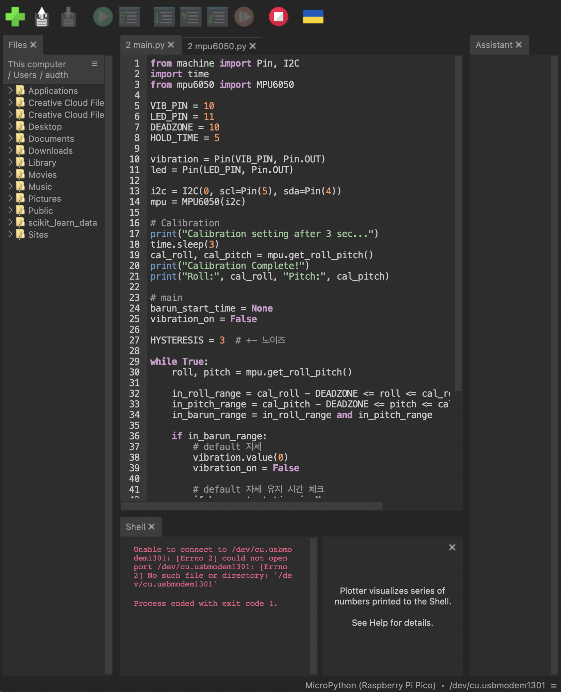

Particular Interactive Thing for You is a project focused on designing interactive devices specifically tailored for myself or someone I know.
Balance Coach is an interactive shoulder-correction device designed for my own habit of leaning my right shoulder downward. When switched on, the device calibrates the user’s posture after three seconds, setting it as the neutral position. If one shoulder tilts, the device provides immediate vibrational feedback. The vibration stops once the posture returns to neutral, and if the correct posture is maintained for five seconds, a white LED blinks once as positive reinforcement.
Most commercial shoulder correctors rely on bulky strap-based structures, making them uncomfortable and socially awkward to wear in public. Balance Coach reimagines posture correction as an accessory that can be worn over a jacket in social settings, prioritizing subtlety, wearability, and immediate bodily feedback.

 
